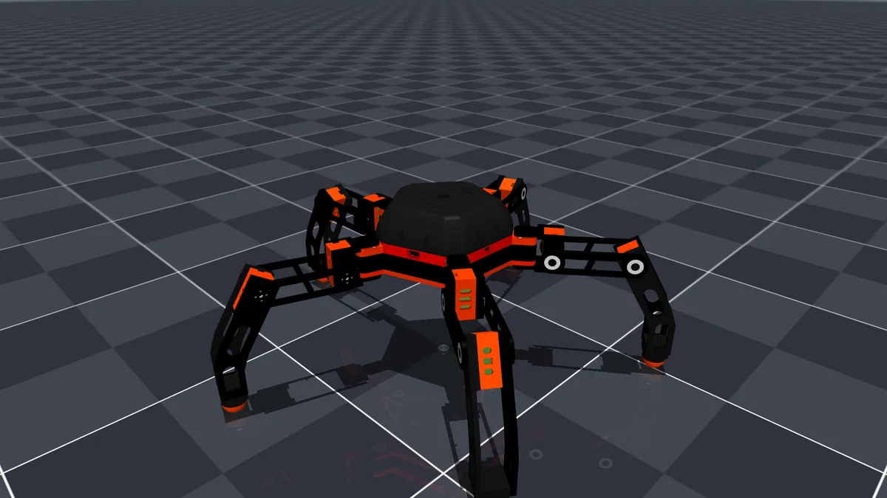
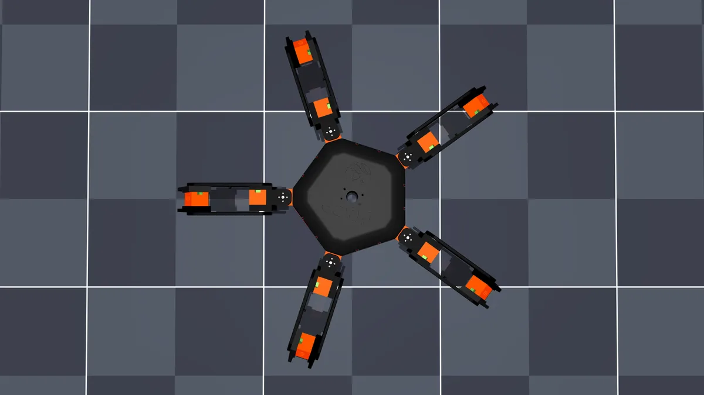
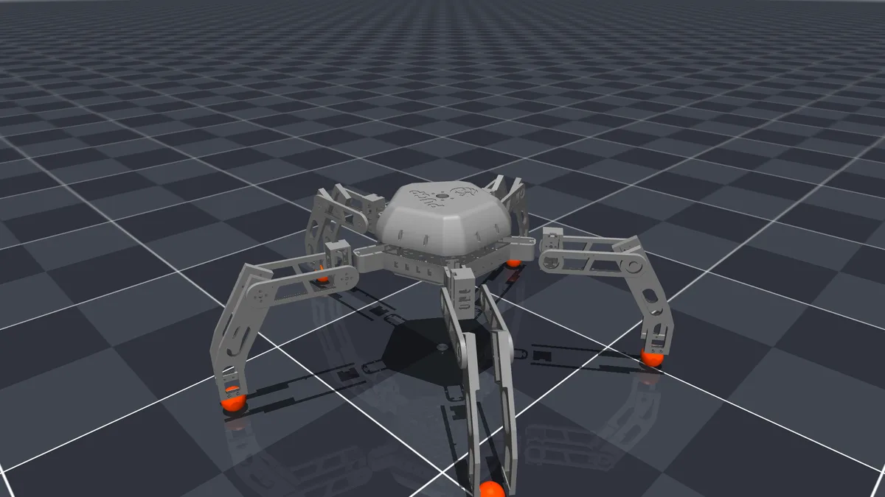
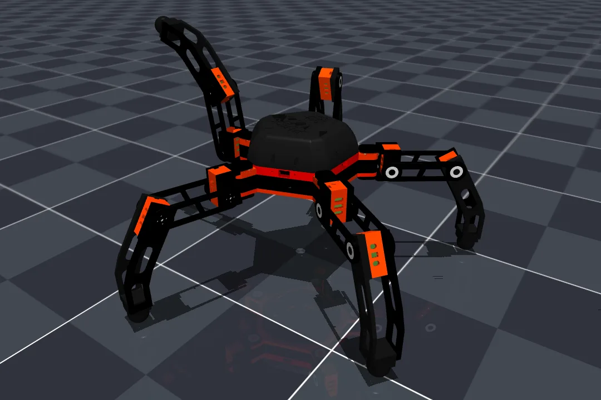
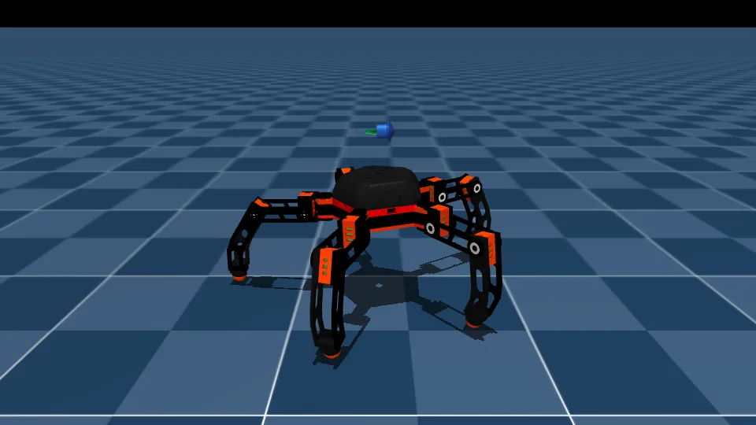
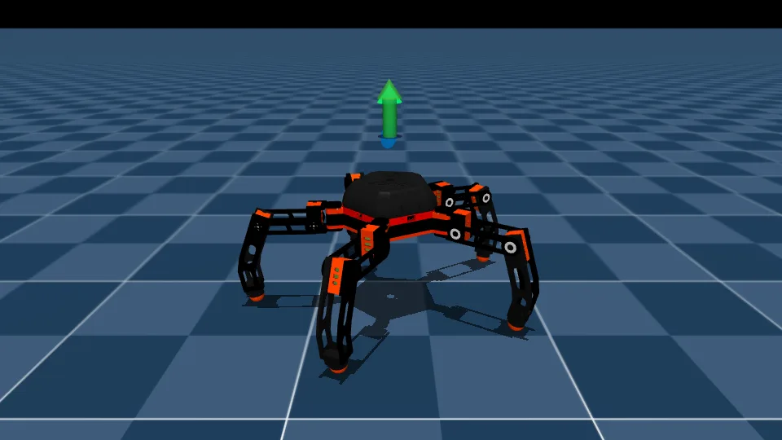
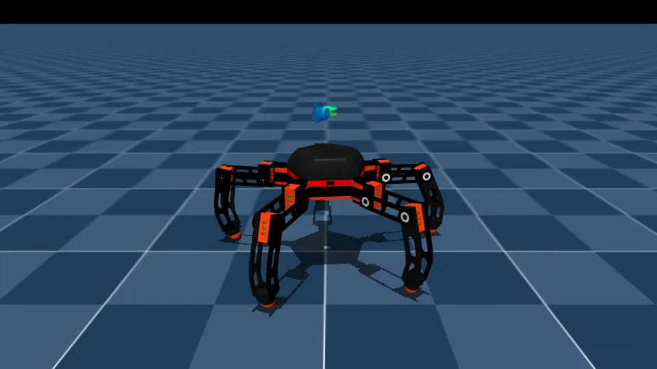
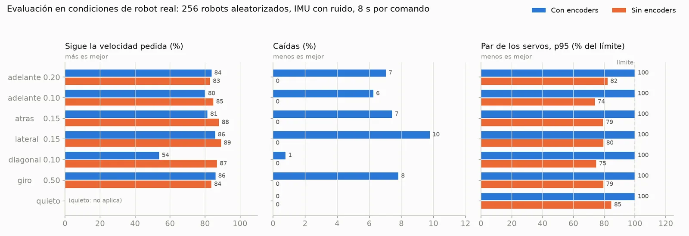

Pentabot: Five-Legged Robot Trained to Walk Without Encoders
A 15-DOF five-legged robot with hobby MG995 servos, which give no position feedback. I modeled it in MuJoCo from the CAD and trained a PPO policy that walks using only the IMU, the joystick command and its own past actions, so it can run on the real hardware.
Code and docs on GitHub → Pentabot
01The problem
The robot uses TowerPro MG995 hobby servos, which do not report their position. A standard locomotion policy needs joint positions and velocities as inputs, so it could never run on this hardware. The goal was a policy that walks with only what the real robot can measure.
02Specs
| Legs | 5, spaced 72° |
|---|---|
| Joints | 15 — hip yaw, hip pitch and knee per leg |
| Servos | TowerPro MG995 at 6 V (stall ≈0.98 N·m, no position feedback) |
| Model mass | 2.47 kg |
| Standing torso height | 0.196 m |
| Planned controller | ESP32 DevKit + PCA9685 + IMU, DualSense controller |




03Encoder-free policy
- Inputs (130): 26 values × 5 steps of history (100 ms) — IMU angular velocity, projected gravity, joystick command, an internal gait clock, and the policy’s own previous actions.
- Network: MLP 130→256→128→128→15, ELU, ≈84k parameters (≈336 KB in float32), small enough for a microcontroller.
- Output: joint targets at 50 Hz. Commands: vx, vy ∈ [−0.2, 0.2] m/s, ωz ∈ [−0.6, 0.6] rad/s.
- Training: PPO in mjlab, 5000 iterations (≈5 h).



04Evaluation under real-robot conditions
256 simulated robots, each with its own servo (kp ×0.6–1.4, torque ±20 %, 4–32 ms delay, ±3° zero offset, gear backlash), mass and friction, plus a noisy, biased and delayed IMU.
| With encoders | Without encoders | |
| Tracks commanded speed | 54–86 % | 83–89 % |
| Falls | 6–10 % | 0 % |
| Servo torque (p95) | 100 % of limit | 74–82 % walking |
| Runs on the real MG995 | No | Yes |

05Next steps
- Run the network on the ESP32: export
policy.onnx, write the MLP in plain C, 50 Hz loop with the IMU and a Bluetooth DualSense, per-servo calibration (<1° error). - Measure a real MG995 (kp, friction, speed) and retrain with it.